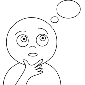
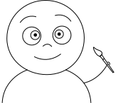

Dictionary in pictures
The site has images for 123 Toki Pona's words and its translations to English, Russian and Italian.
We were excited to know whether it is easy to learn other language having a bridge via pictures and the famous syntactic language.
As an extra constraint we have chosen not to use any of symbols or signs in modern culture as much as it will possible.
Besides all these, it was fun to see some stories with pictures we made. We hope, you will enjoy as well.
Toki Pona Language
Toki Pona is an artificial language which was invented in 2001 by translator and linguist Sonja Lang. That is a 'language of good' by its construction. 'It was my attempt to understand the meaning of life in 120 words'. Read more in Wikipedia or official website.

